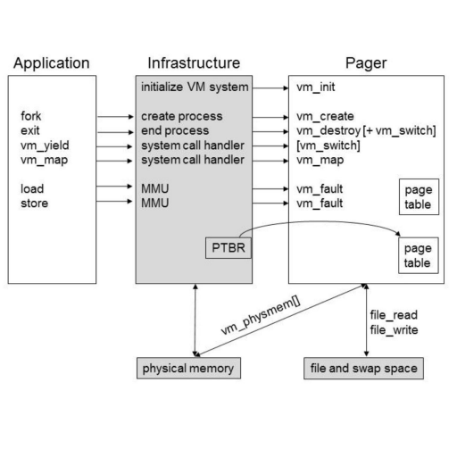
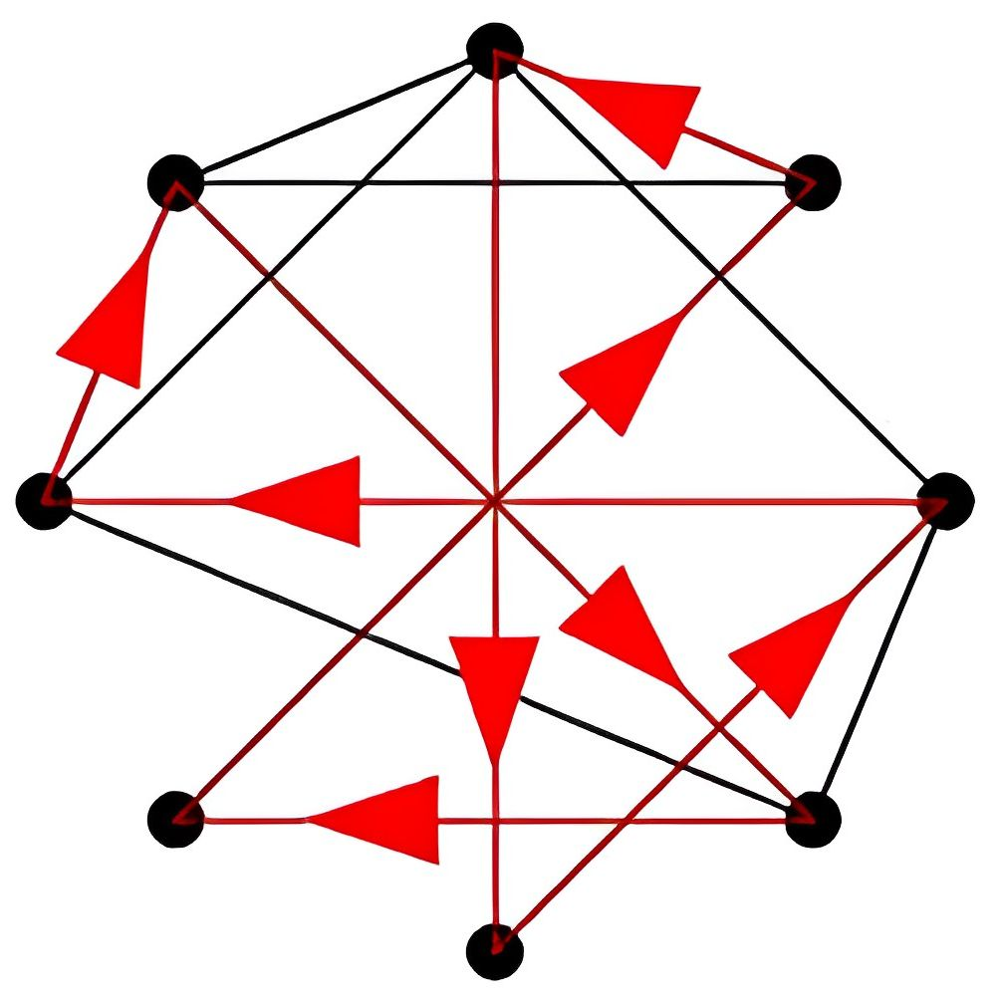

Games
-

Deeper Github Youtube DevBlog1
Embark on a thrilling mining adventure in Deeper, a captivating game reminiscent of Motherload. Journey to unprecedented depths, where you'll dig deeper, collect valuable materials, upgrade your tools, and unlock the hidden secrets to reveal the elusive diamond buried within.
Unity | C# | OOP | Jira -

Space Cube Github DevBlog1
Space Cube is a rapid prototype and my attempt at a novel game. It is a puzzle game where you play as a cube that has the ability to reverse gravity and teleport through dimensions in order to reach the gold star.
Unity | C# | OOP | Jira -

NES Zelda Github DevBlog1
Recreated one of the earliest dungeons of NES Zelda, while highlighting some of the main features. Implemented a seperate dungeon while attempting to add a novel feature, the grappling gun.
Unity | C# | OOP | Jira -
Euchre Github
Euchre, a trick-taking card game played with four players in teams. The goal is to win tricks and earn points to be the first team to reach a predetermined score. It requires strategy and teamwork to succeed.
C++ | OOP | Bots
Web Applications
-

Search Engine Github
Created a search engine, similar to Google or Bing, using parallel data processing with MapReduce and information retrieval concepts such as text analysis and link analysis.
Python | HTML | CSS | Flask | Rest API | Map-Reduce/Hadoop | Multi-Threading | Pipelining | Json | Shell -
Instagram Clone Github
Highlighting main features of Instagram (Follow, Like, Comment, Post, Users, ...), we implemented three versions of instagram that builds off of one another, a static, server-side dynamic, client & server-side dynamic webpage.
Python | SQLite | HTML | CSS | JavaScript | React.js | Flask | Ajax | Shell | Rest API | Jinja2 | Cypress | Json -
Office Hours Queue Github
Created an Office Hours Queue using a double-linked list, acting as a FIFO queue. Users can hop on the back of the queue by entering their name, description, and meeting link and wait for staff to pop them off the queue and join the meeting.
C++ | HTML | CSS | Json
Systems
-
Map Reduce Github
Implemented a MapReduce framework inspired by Google's original MapReduce paper. The framework executes MapReduce programs with distributed processing on a cluster of computers.
Python | Multi-Threading | Thread Pooling | Distributed Systems | Networking -

Network File Server Github
A multi-threaded secure distributed file system that allows clients to interact (Read/Write to File, Create/Delete files/directories) with the file server via network messages.
C++ | Multi-Threading | Distributed Systems | Networking -

Disk Scheduler Github
Disk Scheduler is a simple, multi-threaded, concurrent program that utilizes monitors to schedule disk requests in a shortest seek time first order.
C++ | Multi-Threading
Libraries
-

Thread Library Github
Re-implemented the Thread Library that enables concurrent execution by managing and scheduling multiple threads within a program.
C++ | Multi-Threading | RAII | Timer-Interrupts -
Priority Queue Github
Implemented various versions of the Priority Queue Library in order to gain a deeper understanding of Priority Queues and its complexities.
C++ | Templates -
Hashmap Github
Implemented an Ordered Hash Map that utilizes a custom made Binary Search Tree. Values are sorted on insertion into the Binary Search Tree.
C++ | Templates -
Binary Search Tree Github
Re-implemented the Binary Search Tree Library which supports efficiently storing and searching for elements.
C++ | Templates -
Double Linked List Github
Re-implemented the Double Linked List library using templates in order to better understand the complexities of a Linked List.
C++ | Templates
Architecture
-

External Pager Github
Created an single threaded external pager which manages virtual memory for application processes. The pager manages a portion of the virtual address, through a clock algorithm, space of each application that uses it.
C++ | Virtual Memory -

LC2K Github
LC2K is an assembly language created by University of Michigan. To understand Computer Architecture and lower level languages, I implemented an LC2K assembler, program simulator, linker, pipeline simulator, and cache-simulator along with short LC2K programs.
C | Assembly Language
Optimization
-

Zookeeper Github
Zookeper is a optimization problem, inspired by the Traveling Salesman Problem, that minimizes expenses of a zoo by identifiying the most efficient routes for providing food and water to the animals throughout the zoo.
C++ | OOP -
Log File Manager Github
Log files are typically used for the purpose of debugging or indicating errors. These log files are usually quite massive in size. Log Manager takes care of this by taking in a Log file as input and outputting desired log entries.
C++ | OOP -
Zombie Shooter Github
Zombies Shooter is an optimization problem that simulates a hero defending a building against waves of zombies while given an infinite supply of arrows. This program utilizes functors and a priority queue to optimize the output.
C++ | OOP -
Back To the Ship Github
Ship is an optimization problem that, given a map with yours and the ships position, finds the quickest route back to the ship by utilizing a BFS algorithm.
C++
Misc
-
ML-Post Identifier Github
Wrote an intelligent program that can classify Piazza posts according to its corresponding topic by utilizing a training dataset.
C++ | ML -

Imager Resizer Github
Built an image resizing program using a seam-carving algorithm which allows the program to be content-aware when resizing images.
C++ | OOP -

Statistics Calculator Github
Created a simple command line program that computes and outputs statistics given a dataset or a list of values.
C++